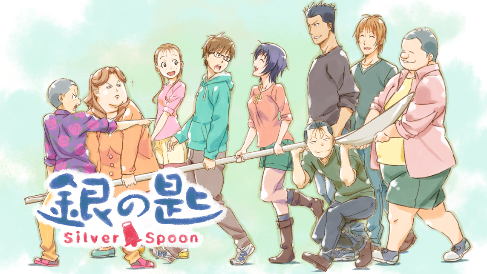
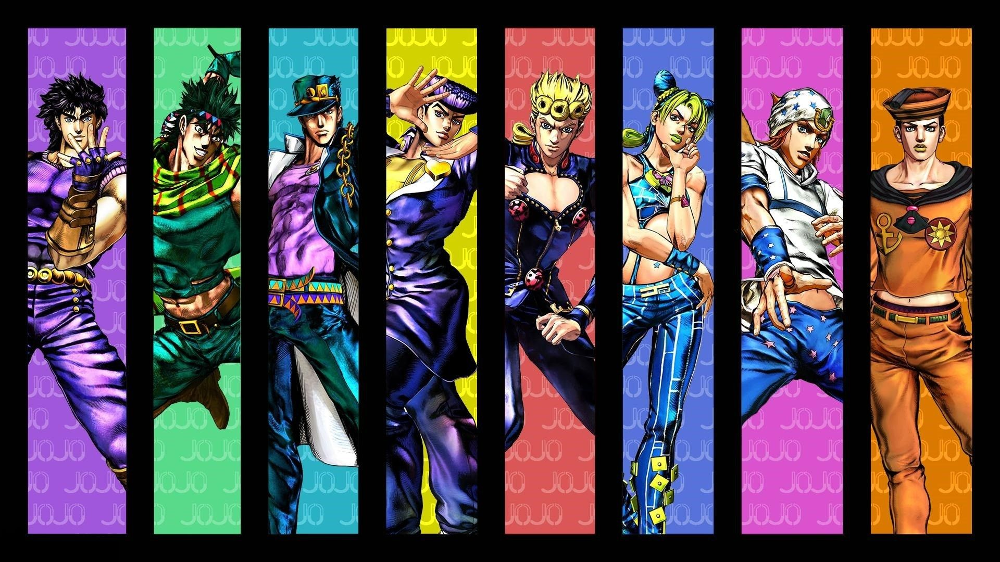
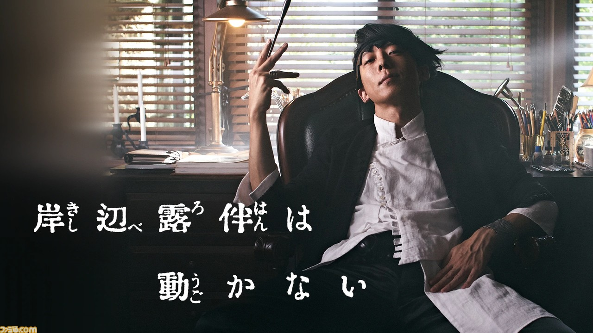

好きな漫画
ここでは僕の好きな漫画について紹介します。
銀の匙 Silver Spoon

あらすじ 主人公の八軒勇吾は進学校で勉強づくしだったが、思うように成果が出ず、自信を無くしてしまう。そんなとき担任に勧められたのが農業高校への進学。そこでは一般家庭の八軒には今までの常識が通用しない環境だった。仲間や動物たちに支えられながらも日々奮闘してゆく、汗と涙、泥にまみれた青春マンガ。
まず好きなのは「銀の匙」です。この漫画は「鋼の錬金術師」で有名な荒川弘先生が描いている北海道の農業高校を舞台とした青春学園マンガ。先生は農家生まれで農業高校出身、その経験も多く反映されているようです。「銀の匙」の見所は、ギャグが満載だし、キャラも魅力的です。また、出てくる料理がとても美味しそうでお腹がすきます。ただそれだけではなく、家畜と関わり、食べるという事の大切さだったり、酪農や農業の現実、登場人物のそれぞれの葛藤が分かりやすく描かれています。農業や酪農に関わっていなくても楽しく読めるので沢山の人に読んでほしいです。
ジョジョの奇妙な冒険シリーズ


あらすじ 第1部の主人公ジョナサン・ジョースターと宿敵ディオ・ブランドーの因縁が時を超え世界中を股にかけて繰り広げられる壮大な物語です。でも第８部まで展開していて部ごとにそれぞれのストーリーがあります。作品を通してのテーマは「人間賛歌」。
友達に勧められて読み始めましたが読むうちにどんどんハマっていきました。話は少し複雑なところはありますが面白いですし、波紋やスタンドを使ったバトルは迫力があり最高です。最近では４部に出てくる岸辺露伴が主人公の「岸辺露伴は動かない」が実写ドラマで放送されました。演じていた高橋一生さんはかっこよくて、品があり岸辺露伴の良さを出していて面白いドラマでした。またジョジョシリーズを読み返したくなりました。